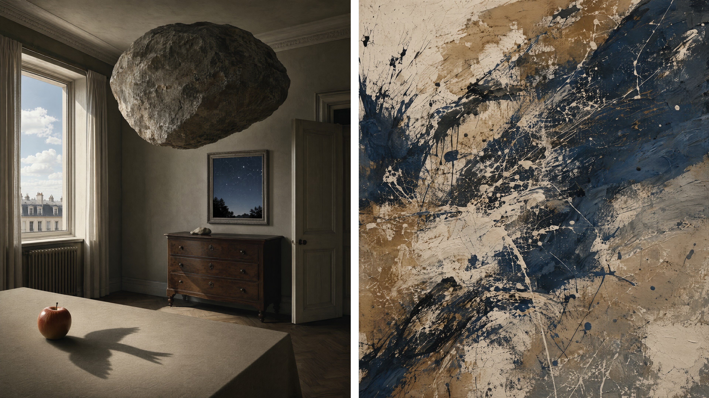

一个要求逻辑写得极清楚，一个承认逻辑无法被复刻——文化层指称的两种边界

1924 年，安德烈·布勒东发表《超现实主义宣言》，把超现实主义定义为不受理性控制的“纯粹心理自动主义”。它反对的不只是学院派写实，也反对把理性、功用与常识当成现实的唯一边界。梦、偶然、无意识、自由联想，都是用来撬开这道边界的工具。
但“画怪东西”不是可执行的视觉机制。它只会把模型推向一个混杂的大集群：漂浮岛、巨眼、发光水母、紫色星云、门通往另一个宇宙——这些是当代奇幻概念图的众数，不是超现实主义。
以达利和马格利特这条写实支线为例，真正的机制可以压缩成一个公式：
超现实效果 = 精确、冷静、可信的写实技法
+ 一条可以用完整句子说清的逻辑悖论
两项缺一不可。只有写实，没有悖论，是广告摄影；只有怪诞，没有写实，是奇幻插画。两者同时成立时，观众才会经历那种特殊的不安：眼睛确认每件东西都是真的，理性却无法让它们共存。
surreal 是一个被日常用法污染的词与上一章的 impressionist 一样，surreal 已经泛化为“奇怪、梦幻、不可思议”。单独使用时，模型倾向于增加雾、霓虹、星空、漂浮碎片和夸张色彩，却不建立任何可复述的悖论关系。
绕过方法不是堆更多形容词，而是删掉 weird, bizarre, dreamlike, mystical，改写一条主语—谓语—宾语明确的违反逻辑事件：a marble boulder hangs from a thin cotton thread without bending it。悖论越具体，结果越稳定。
达利把自己的方法称为“手工绘制的梦中摄影”（hand-painted dream photographs）。形式上的关键并不是软钟这个题材，而是微小笔触、硬边轮廓、低视点、遥远且清晰的地平线、近乎无空气雾化的干燥光线。场景像法医照片一样冷静，悖论才显得更刺眼。
如果提示词写了 soft melting object，却同时用了柔焦、薄雾、发光边缘，那么软化会被读成氛围效果；只有把它放进坚硬、清晰、无情绪的光学环境里，它才是物理悖论。
an enormous cast-iron safe slumps over the edge of a small wooden table like wet cloth, its riveted steel door drooping in soft folds while retaining crisp metallic reflections, a thumb-sized human figure measures the fold with a ruler, an empty arid plain extending to a razor-sharp horizon, hard neutral sunlight from high camera-right, 5600K, short crisp cast shadows, photorealistic rendering with minute controlled brushwork, every edge sharply resolved, dry matte earth, cold polished iron, no haze, no glow, no fantasy lighting, Surrealist oil painting in the hand-painted-dream-photograph mode, low eye level, deep focus from foreground to horizon, 35mm equivalent, wide horizontal composition, exactly one physical impossibility
模型：MJ v8.1 · --ar 3:2 · 无负面词
| 片段 | 决定作用 |
|---|---|
cast-iron safe ... like wet cloth | 把“软化”写成具体的材质冲突：视觉上仍是铁，力学上却是布 |
retaining crisp metallic reflections | 阻止模型直接把保险柜改画成灰布袋；悖论必须让两种属性同时保留 |
photorealistic rendering ... sharply resolved | 这不是要生成照片，而是规定“证明悖论”的写实精度 |
no haze, no glow, no fantasy lighting | 切断“超现实 = 梦幻滤镜”的错误捷径 |
exactly one physical impossibility | 控制变量。悖论太多会互相稀释，退化成随机奇观 |
马格利特的画法比达利更平、更冷、更像通俗插图；他的锋利来自概念关系。苹果挡住脸，室内的画布与窗外风景无缝连续，白昼天空悬在完全入夜的街道上。每个单体都普通，错误发生在它们之间。
《光之帝国》系列的机制尤其适合提示词：同一画面下半部是夜间街道，上半部却是明亮的蓝天与白云。注意，不能只写 day and night together，那通常得到左右拼接或黄昏。要把矛盾的空间分配、光照独立性和禁止过渡写清楚。
a quiet ordinary townhouse beside a pond, one streetlamp glowing, the house, trees and water in complete moonless night in the lower half, while directly above them the upper half contains a bright midday cobalt-blue sky with small sunlit white cumulus clouds, no sunrise, no sunset, no twilight gradient — the two lighting states meet abruptly at the silhouette of the trees, the streetlamp illuminates only a small pool on the dark pavement; the bright sky casts no daylight onto the house below, plain precise illustrative oil rendering, smooth paint, crisp ordinary objects, restrained Surrealism built from an impossible relation between two familiar realities, frontal eye-level view, deep focus, quiet centred composition, no people, no spectacle, no floating objects
模型：Nano Banana Pro · 4:3 · 自然语言模式
这条真正干活的是三组约束：
no sunrise, no sunset, no twilight gradient，堵住模型用黄昏“合理化”矛盾的倾向。第三项最重要。模型具有强烈的物理一致性先验，会本能地修正你的不合理要求。超现实提示词的工作恰恰是指定哪条物理一致性不许被修正。
| 手法 | 机制 | 弱写法 | 可执行写法 |
|---|---|---|---|
| 尺度错置 | 物件身份不变，尺寸关系违反经验 | giant apple | one green apple completely fills a furnished bedroom, pressing the bed and wardrobe against three walls |
| 悬浮 | 重物无支撑，但环境仍服从重力 | floating rocks | a granite boulder hangs motionless ten centimetres above a dining table; the tablecloth and dust fall normally downward |
| 材质替换 | 对象的视觉身份与力学行为冲突 | soft clock | a polished steel spoon bends and pools like hot wax while retaining mirror-metal reflections |
| 空间嵌套 | 容器内部大于外部，或内外连续 | room inside room | an open matchbox contains a full railway station whose tracks continue out across the tabletop without changing scale |
| 日夜矛盾 | 两个互斥照明状态共存且不混合 | day and night | bright midday sky above; buildings below in moonless night; no twilight transition; daylight does not illuminate them |
一个务实原则：一张图只设一个主悖论。尺度错置 + 悬浮 + 材质替换 + 空间门同时出现，模型会把它归类为“奇幻世界”，观众也不再追问哪条现实规则被破坏。只有一个错误，周围一切都正确，错误才有压强。
超现实主义并非只有达利和马格利特的精确写实。不同分支应当用不同的形式语言指称，不能互相混写：
| 分支 | 方法与视觉差异 | 提示词指称 |
|---|---|---|
| 马克斯·恩斯特的拓印（frottage） | 纸覆在木板、叶脉等凹凸表面上，以铅笔擦拓取得纹理；再从随机纹理中辨认森林、鸟或怪物。关键是纹理先于形象 | frottage rubbing on paper, graphite catching raised wood grain, accidental texture gradually read as a dense forest, image emerging from the rubbing rather than drawn over it |
| 伊夫·坦基的生物形态 | 无限平坦荒原上散布无名的软质生物形体；地平线低而清楚，光影精确，物体像骨、石与内脏之间的未知物 | small biomorphic mineral-organic forms scattered across an infinite smooth plain, low sharp horizon, long precise shadows, no recognisable species or object |
| 保罗·德尔沃的空旷 | 古典建筑、空站台、冷月光、彼此无交流的人物；不是怪物，而是事件缺席造成的悬置 | deserted neoclassical railway platform at night, isolated figures standing far apart without looking at one another, cold moonlight, immaculate architecture, narrative withheld |
布勒东所说的自动主义，价值在于绕开预先计划，让无意识联结自行出现。提示词生成却必须先用语言规定内容；规定得越精确，就越不像自动主义。
如果要模拟恩斯特式的偶然生成，较诚实的工作流不是写一条超长提示词，而是分两步：先生成无对象的拓印/刮擦纹理；再由人挑选其中可被“看成”某物的局部，用局部编辑顺着它发展。选择哪块偶然、把它解释成什么，是人的决定。让模型一次性完成两步，只会得到“看起来像随机”的设计图案。
1940 年代后期至 1950 年代，纽约的抽象表现主义把“画什么”降到次要，把画的动作、画布的尺度、颜料在重力下发生了什么推到前景。它反对欧洲传统的再现，也延续了超现实主义自动主义对预先计划的怀疑。
但“抽象表现主义”不是一种统一外观。至少要分成两条几乎相反的路线：
波洛克把未绷框的画布铺在地上，从四周进入，用棍、硬刷和有孔容器滴、甩、淌。颜料线不是在描绘对象，而是记录手臂速度、身体跨度、停顿、重力与黏度。所以真正需要提示的不是“很多乱线”，而是不同动作留下的不同痕迹：
an all-over field of poured household enamel on raw unprimed canvas, no focal point, no figure-ground hierarchy, density reaches every edge, long thin continuous arcs from fast arm swings crossing the full width, short thick drops and round pools from slow low pours, black, bone white, aluminium silver and muted ochre laid in distinct chronological layers, earlier lines visibly interrupted by later ones, real paint behaviour: raised ridges at pooled edges, glossy thick enamel beside dry matte stains, paint soaked into the canvas in thin areas, visible coarse canvas weave throughout, drips, pooling, skips where the tool lost contact, occasional smeared footprint trace, Abstract Expressionist action painting, floor-worked process record, strictly overhead orthographic view, even neutral 5600K documentation light, seamless background texture, no frame, no wall, no gallery interior, no depicted objects
模型：FLUX.2 · 1:1 · 采样步数按默认
| 片段 | 为什么需要 |
|---|---|
distinct chronological layers | 让画面读得出先后，不是一次性生成的“面条图案” |
ridges / glossy / matte / soaked | 同一张画里的厚薄差、光泽差，是物质性的证据 |
visible canvas weave | 给线一个真实尺度。没有织纹，线条会悬浮成数字矢量 |
overhead orthographic / even neutral light | 把它定义成可用纹理素材，而非画廊中一幅斜拍的画 |
no focal point ... reaches every edge | all-over 构图：画面没有中心，边缘暗示还可继续延伸 |
罗斯科这一路的目标与行动绘画相反：不是让观众追踪动作，而是让观众长时间停在色与色的边界前。巨幅竖向画布上，几个横向矩形悬浮叠置；色层很薄，边缘不是几何硬切，而是被反复擦、罩、渗出来的羽化区。
色域绘画最容易翻成两种错误：一是扁平矢量海报，二是网页渐变背景。两者都没有颜料层、织纹和呼吸式边缘。因此提示词要同时否定“硬边”和“数字平滑”。
a very large vertical raw canvas with three stacked horizontal colour fields, a deep oxblood upper field, a muted ember-orange middle field, and a near-black plum lower field, the rectangles float with irregular soft breathing edges — feathered, rubbed and stained, never geometric hard edges, never vector shapes, never a digital gradient, many translucent veils of thinned pigment, underlayers faintly glowing through, uneven saturation, subtle tide marks, tiny pinholes of raw canvas, visible canvas weave at close range, completely matte surface, no impasto, Colour Field painting, human-scale immersive viewing, flat frontal orthographic documentation, even 5000K museum light, vertical background asset, no frame, no wall, no furniture, no signature
模型：Seedream 5 · 2:3 · 风格强度中等
这里要特别注意：no impasto 与行动绘画的 raised ridges 正相反。罗斯科式色层的物质性不来自厚，而来自许多层薄颜料在纤维里的渗透差。把本章通用的 thick impasto 硬塞进来，会把色域画变成蛋糕糖霜。
具象图的成败可以部分外包给相似性：画得像猫、像城市、像卡拉瓦乔，至少有可比较的对象。抽象作品的价值却高度依赖决策过程和物质事实：
所以应当诚实：AI 可以模仿抽象艺术的表面图案，不能替你复制那件抽象作品的艺术史价值。这不是模型分辨率不足，而是媒介和因果链不同。
当模型画出滴洒线时，那些线并不是一次身体行为的记录；当它画出厚颜料时，画布上也没有一毫米凸起。把结果称为“行动绘画”会混淆图像与对象。更准确的说法是：一张指称行动绘画视觉传统的数字图像。
这不是咬文嚼字，而是决定用途：它适合作为游戏 UI 的背景、包装纹理、舞台 LED 内容、3D 材质的颜色/粗糙度设计参考；不适合作为“AI 替我创作的抽象艺术品”去期待同样的观看价值。
| 用途 | 提示词必须补的用途层约束 | 后续动作 |
|---|---|---|
| 平面背景 | no focal point, density reaches every edge, no frame, orthographic | 裁切、降对比，保证文字可读 |
| 无缝纹理 | seamless tileable texture, no directional lighting | 检查四边接缝；分离颜色、高度、粗糙度通道 |
| 3D 材质参考 | visible height difference, thick ridges, pooled edges, matte/gloss variation | 不要把生成图直接当法线图；重建真实高度与粗糙度 |
| 舞台/动效底图 | large calm colour fields, low spatial frequency, no small high-contrast detail | 在时间轴上做极慢的边界呼吸，避免把它动画成屏保 |
对行动绘画，物质性关键词可以从这组里选：thick impasto, visible canvas weave, drips and pooling, raised paint ridges, enamel gloss beside matte stain。但不要整组无脑复制：如果要的是色域画，保留 visible canvas weave 和薄层渗染，删掉 thick impasto。
| 你写的 | 大概率得到的 | 成因 | 绕过 |
|---|---|---|---|
surreal | 紫雾、星空、巨眼、漂浮岛等当代奇幻概念图 | 词义泛化，“奇怪/梦幻”压过艺术史机制 | 写清一条主谓宾完整的悖论；补 photorealistic rendering；禁止雾、辉光与奇幻打光 |
day and night together | 左右拼接、黄昏、双重曝光 | 模型主动把矛盾合理化 | 规定上下空间分配，否定 sunrise/sunset/twilight，并切断亮天空对下方建筑的照明 |
floating object | 整个场景失重，尘土、布料都在飘 | 模型把局部悖论扩展为世界规则 | 强调其余物体服从重力：dust and tablecloth fall normally downward |
abstract expressionism | 彩色“面条”均匀铺满，线宽一致、没有层次 | 学到的是表面图案，缺失动作与材料因果 | 列出快甩/慢滴/停顿各自痕迹，写先后覆盖、池化边脊、渗入织纹与光泽差 |
colour field | 矢量矩形或网页渐变 | 高频数字设计语义压过绘画语义 | 否定 hard edge/vector/digital gradient；写薄层罩染、潮痕、针孔、织纹和不均匀饱和度 |
thick impasto 用在所有抽象风格 | 每种抽象画都像厚糖霜 | “物质性”被简化成“越厚越真” | 按支线选择：行动绘画可厚薄并存；色域画应是薄、渗、哑光 |
| 抽象画 + 镜头词 | 画挂在画廊墙上，带画框、地板和射灯 | 85mm photography 等词把主体改成“被拍摄的画” | 素材用途写 overhead/front orthographic documentation, no frame, no wall，不写摄影焦段 |
超现实主义：写逻辑，不写“怪”。先用一句完整的关系定义悖论，再用精确写实把它钉死；让其余世界保持正常。
抽象表现主义：写材料，不写“艺术感”。指定颜料黏度、厚薄、渗透、覆盖顺序、画布织纹和尺度；然后承认你得到的是视觉素材，不是那次身体行为的替身。
两者看似一具象一抽象，其实都在要求同一件事：不要用流派名替代机制。文化层仍需指称，但只有物理层能把指称校准到你真正要的分支。